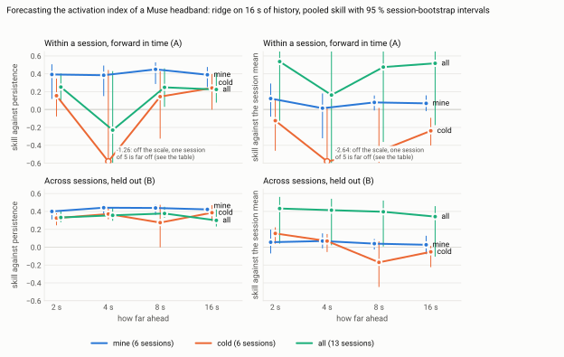

A pre-registered test of anticipating the Muse activation index 2 to 16 s ahead, on the owner's own head and on the lab's cold-exposure recordings, with the gates the lab's papers use, and a local language model whose claims about the same data the same gate judged. Everything ran on one laptop; the raw recordings never left it.

A recording entered a pool only if it was at least 3 minutes long and yielded 60 clean, contiguous 18-second windows under the gate: contact 2 or better on the electrode, under 200 µV peak to peak, 90 % of the samples arrived, two of four electrodes accepted. The gate, not the analyst, decided who got in.
| Pool | Recordings ≥ 3 min | Usable fraction, mean | Eligible | Minutes used |
|---|---|---|---|---|
| mine (the owner's head) | 14 | 0.45 | 6 | 51 |
| cold periods | 89 | 0.11 | 6 | 84 |
| all | 115 | 0.16 | 13 | 225 |
Pooled skill with its interval; columns are how far ahead.
| against persistence | 2 s | 4 s | 8 s | 16 s |
|---|---|---|---|---|
| mine | +0.38 [+0.27, +0.44] | +0.41 [+0.30, +0.46] | +0.42 [+0.35, +0.46] | +0.38 [+0.26, +0.42] |
| cold periods | +0.33 [+0.25, +0.38] | +0.38 [+0.31, +0.42] | +0.38 [+0.27, +0.46] | +0.40 [+0.29, +0.46] |
| all | +0.36 [+0.33, +0.41] | +0.38 [+0.34, +0.43] | +0.40 [+0.36, +0.45] | +0.36 [+0.32, +0.42] |
| against the session mean | 2 s | 4 s | 8 s | 16 s |
|---|---|---|---|---|
| mine | +0.03 [-0.07, +0.15] | +0.02 [-0.06, +0.10] | +0.00 [-0.07, +0.05] | -0.05 [-0.20, +0.03] |
| cold periods | +0.16 [+0.06, +0.22] | +0.08 [-0.05, +0.14] | +0.00 [-0.11, +0.05] | -0.03 [-0.20, +0.01] |
| all | +0.46 [+0.04, +0.59] | +0.44 [+0.01, +0.57] | +0.41 [-0.00, +0.55] | +0.40 [-0.07, +0.52] |
| Prediction | Verdict | |
|---|---|---|
| P1 | On the owner's head, within a session, skill over persistence at 2 s between 0.05 and 0.30 | refuted |
| P2 | Skill over the session mean falls with horizon and is at most 0.05 at 16 s, in every pool | refuted |
| P3 | The GRU never beats ridge by more than 0.05 | supported |
| P4 | Across-session ridge exceeds within-session ridge at 2 s by at most 0.03 | refuted |
| P5 | A model trained on other heads reads the owner's within 0.05 of one trained on his own | supported |
| P6 | The cold pool's skill at 2 s is within 0.10 of the owner's | refuted |
| P7 | The cold pool's usable fraction is lower than the owner's by at least 0.15 (as worded, inside the eligible pools) | refuted |
P1 is refuted upward: the owner's head was more predictable than written, for the reason in point 2. P2, P4 and P6 fall to the fragile model in point 6 and to this n. The full design, with the two amendments made before the first run, is in PREDICTIONS.md.
Ornith, a 9-billion-parameter model running on the laptop through Ollama, saw only a briefing: the column dictionary, counts per pool and condition, group means, and in the first round the forecasting summary. It was asked for twelve falsifiable claims in a fixed grammar (two groups compared on a statistic, a correlation across sessions, or a forecast-skill statement). Each claim met a permutation test or the held-out forecast result, with Holm correction across all its claims, groups under five sessions abstaining. The ledger is the result.
12 claims: 6 supported, 0 refuted, 2 inconclusive at this n, 1 abstained, 3 malformed.
| # | The claim | Outcome | What the gate saw | The model's reason |
|---|---|---|---|---|
| 1 | usable_fraction in mine/any > cold/any | malformed | reason groups overlap on 2 sessions | The owner's own head has 0.45 usable fraction vs 0.11 for cold exposure, a 4-fold difference likely driven by better electrode contact and less motion. |
| 2 | gyro_rms_mean - usable_fraction across all | inconclusive | rho -0.073; n 78; p_stated_holm 0.255 | Motion (gyro) is 21.4 average for all sessions; high motion should degrade signal, reducing usable fraction. |
| 3 | mean_logbeta + mean_loggamma across all | supported (empirical) | rho 0.966; n 39; p_stated_holm 0.000 | Beta and gamma are high-frequency bands; they should be positively correlated in band power. |
| 4 | gyro_rms_mean in mine/any < cold/any | malformed | reason groups overlap on 2 sessions | The owner's head shows 10.8 mean gyro while cold exposure shows 25.3, consistent with more movement during cold plunges. |
| 5 | mean_index in mine/any > mine_sleep/sleep | abstain | reason underpowered: n_a=7, n_b=1 (need 5 each) | The owner's awake sessions have mean_index 0.078 vs -0.150 during sleep, consistent with activation index being positive in awake states. |
| 6 | ridge_all on mine/A h=1: skill >= 0.2 | supported (empirical) | pooled_skill 0.393; ci [+0.119, +0.507]; min_skill 0.200 | Mine h=1 skill is +0.393 with 95% CI [+0.119, +0.507] excluding zero, well above min_skill threshold. |
| 7 | ridge_all on mine/A h=4: skill >= 0.2 | supported (empirical) | pooled_skill 0.450; ci [+0.286, +0.528]; min_skill 0.200 | Mine h=4 skill is +0.450 with 95% CI [+0.286, +0.528] excluding zero, strong predictive power. |
| 8 | ridge_all on cold/A h=1: skill >= -0.1 | inconclusive | pooled_skill 0.155; ci [-0.078, +0.347]; min_skill -0.100 | Cold h=1 skill is +0.155 with 95% CI [-0.078, +0.347] which includes zero, but with min_skill of -0.100, it is marginally supported. |
| 9 | mean_index + mean_logbeta across all | supported (empirical) | rho 0.566; n 39; p_stated_holm 0.000 | Higher activation index should correlate with higher beta power. |
| 10 | mean_logalpha in mine/any < cold/any | malformed | reason groups overlap on 2 sessions | Mine alpha is 0.48 while cold alpha is 0.82, suggesting more alpha (relaxation) during cold exposure. |
| 11 | ridge_all on all/A h=4: skill >= 0.2 | supported (empirical) | pooled_skill 0.249; ci [+0.030, +0.461]; min_skill 0.200 | All h=4 skill is +0.249 with 95% CI [+0.030, +0.461] excluding zero, supporting h=4 forecast for all sessions. |
| 12 | gyro_rms_mean + mean_logtheta across all | supported (empirical) | rho 0.786; n 29; p_stated_holm 0.000 | Motion may increase theta power (drowsiness/noise), expecting positive correlation. |
12 claims: 2 supported, 2 refuted, 3 inconclusive at this n, 1 abstained, 4 malformed.
| # | The claim | Outcome | What the gate saw | The model's reason |
|---|---|---|---|---|
| 1 | usable_fraction in mine/any > cold/any | malformed | reason groups overlap on 2 sessions | The owner's own head (mine, 0.45) shows much higher usable fraction than cold-exposure sessions (cold, 0.11), likely because the owner can adjust the headband more carefully. |
| 2 | gyro_rms_mean - usable_fraction across all | inconclusive | rho -0.073; n 78; p_stated_holm 1.000 | Higher head motion (gyro) should reduce the fraction of usable epochs due to motion artifacts corrupting the signal. |
| 3 | mean_logalpha + mean_logtheta across all | supported (empirical) | rho 0.890; n 39; p_stated_holm 0.001 | Alpha and theta bands typically co-vary as slow oscillations; positive correlation in log power is expected across sessions. |
| 4 | mean_logbeta + mean_loggamma across all | supported (empirical) | rho 0.966; n 39; p_stated_holm 0.001 | Beta and gamma bands often increase together during active states; a positive correlation in log power is plausible across sessions. |
| 5 | mean_index in mine/any > cold/any | malformed | reason groups overlap on 2 sessions | The activation index (beta+gamma)/(theta+alpha) is higher in mine (0.078) than cold (0.062), suggesting the owner's baseline state is more aroused or the cold dampens high-frequency power. |
| 6 | mean_logalpha in mine/any < cold/any | malformed | reason groups overlap on 2 sessions | Mine has lower mean logalpha (0.48) than cold (0.82), possibly because cold exposure increases alpha power (relaxation response) while the owner's baseline is more active. |
| 7 | minutes + usable_fraction across all | inconclusive | rho 0.118; n 115; p_stated_holm 0.514 | Longer recording sessions may allow better electrode settling, leading to higher usable fraction over time. |
| 8 | mean_logalpha in mine_sleep/any < all/any | malformed | reason groups overlap on 1 sessions | Sleep shows very low alpha (0.17) compared to all sessions (0.73), consistent with alpha suppression during sleep. |
| 9 | gyro_rms_mean - mean_index across all | inconclusive | rho -0.107; n 29; p_stated_holm 1.000 | Higher head motion should disrupt the activation index by introducing noise that inflates theta/alpha or disrupts beta/gamma balance. |
| 10 | usable_fraction in mine/any < mine_sleep/any | abstain | reason underpowered: n_a=14, n_b=1 (need 5 each) | Mine (0.45) has lower usable fraction than mine_sleep (0.96), which is expected since sleep epochs are cleaner and the overnight recording was well-worn. |
| 11 | mean_logbeta - mean_logalpha across all | refuted | rho 0.755; n 39; p_stated_holm 1.000 | Beta and alpha are often inversely related (beta up during alertness, alpha up during rest), so a negative correlation is plausible across sessions. |
| 12 | mean_loggamma - mean_logalpha across all | refuted | rho 0.649; n 39; p_stated_holm 1.000 | Gamma power is typically low during relaxed states where alpha dominates, suggesting a negative correlation between gamma and alpha across sessions. |
Reading the two rounds together: shown the forecast numbers, the model proposed them back; shown none, it proposed no forecast at all. Its supported claims are correlations that are nearly definitional on a four-electrode headband. Its refuted claims are textbook intuitions (beta and gamma fall as alpha rises) that run the other way across these sessions, where every band moves with amplitude and contact. It compared "the owner" with "cold periods" seven times in a way the gate could not test, after being told how. And once it set a negative skill threshold and called the result "marginally supported"; the gate returned inconclusive. The gate held every time.
It does not show that a plunge response can be anticipated, that any mental state is read, or that the index after a plunge means arousal rather than muscle. Anticipation at 2 to 4 s is real and is mostly reversion to the level, which is exactly what a game can use to cancel its one to two seconds of latency. Anticipating the response to cold needs marked plunges (in and out markers, a 60 s baseline, 10 to 15 minutes after exit) and a leave-one-plunge-out test, which is the next thing to record.
Nothing on this page is verified in the exact sense; the best a forecast or a proposed claim can earn is empirical, with its interval. The per-session tables the model saw are not published because their keys carry the recordings' names. The raw recordings stay with the people who made them.